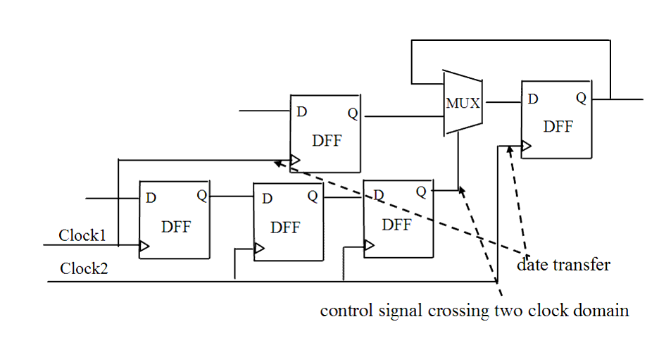

| Description | This rule fires when Leda detects a control signal crossing clock domains with data transfer. Such control signals can adversely affect the performance of scan insertion and timing analysis. You can activate this rule to double check such signals and avoid data failures caused by clock skew. |
| Policy | DESIGN |
| Ruleset | CLOCKS |
| Language | VHDL/Verilog |
| Type | Hardware |
| Severity | Note |
This is an example of invalid Verilog code, followed by a circuit diagram that illustrates the problem:
module ntl_clk26_top( );
input Clock1, Clock2, Ctrl;
...
reg Ctrl_01, Ctrl_02, Ctrl_03;
wire net_01, net_02;;
reg data_1, data_2;
always @(posedge Clock1)
Ctrl_01 <= Ctrl;
always @(posedge Clock2)
Ctrl_02 <= Ctrl_01;
always @(posedge Clock2)
Ctrl_03 <= Ctrl_02;
//NTL_CLK26 fires -- control signal crossing two clock domains
always @(posedge Clock1)
data_1 <= net_01; // date_1 in clock1 domain
assign net_02 = Ctrl_03 ? data_1 : data_2;
always @(posedge Clock2)
data_2 <= net_02; // date_2 in clock2 domain
endmodule
